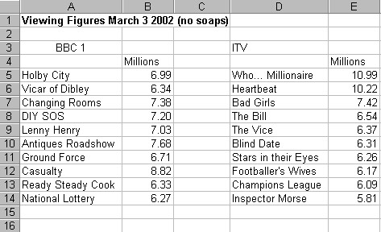
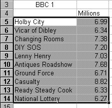
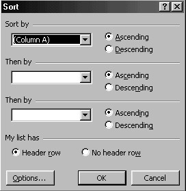
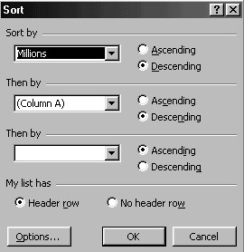
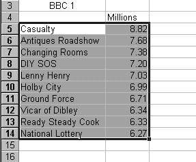

Free
computer Tutorials
|
Free
computer Tutorials
|
|
 HOME
HOME
|
Stay at Home and Learn | |||||
Sorting Data in an Excel Chart
In this section you'll learn how to create a chart from data in a spreadsheet. You'll also learn how to sort data. Sorting data and charts are not part of the same subject: you can sort data without having a chart, and have a chart without sorting data. But sorting data sometimes comes in useful, so we'll tackle it now, and used our sorted data to create our chart. Before we start this section, though, you need to create the spreadsheet below. Type in the data exactly as it is in this one:  The spreadsheet above shows the viewing figures for BBC 1 and ITV. The soap operas Eastenders and Coronation Street are not included. The ITV programmes have already been sorted, but the BBC programmes have not. We'll sort the BBC programmes now.
Sorting the DataAfter we sort the BBC1 programmes, the highest viewing figures will
be at the top and the lowest at the bottom. This is a Descending sort.
If we were sorting the other way around, with the lowest first and the
highest last then it would be a Ascending sort. Before you can sort data, you need to "tell" Excel what you want to sort. You "tell" Excel by highlighting the data. So highlight the BBC 1 programmes and the figures. Your highlighting should look like the one in the image below.  To sort the BBC 1 figures, do the following:
 In the Sort By box it says "Column A". To the right of this there a Ascending radio button and a Descending radio button. The Sort By box is actually a drop down list.
You could click the OK button right now and the data would be sorted. But what about those "Then By" boxes? What do they do? Well, suppose two of the programmes had exactly the same viewing figures. We have chosen to Sort By the Millions column, the numbers. If two programmes had the same numbers we could specify what to sort on next. If you click the black down-pointing arrow of the first "Then By" box you'll see a drop down list. It's the same list as the Sort By box. Select "Column A" and Descending. If two programmes had the same viewing figures, Excel will then look at Column A. It will see text in this column. It will then sort the two programmes that have "drawn" into alphabetical order. So the "Then By" boxes are for what happens in the event of a draw. You choose which column to sort on next. But click the OK button when your dialogue box looks like the one below:  Your BBC 1 Viewing figures should now look like this: 
And that's all you need to do for the sort. We can move on to creating a Chart from our data. <--Back to the Excel Contents Page
|
||||||
|